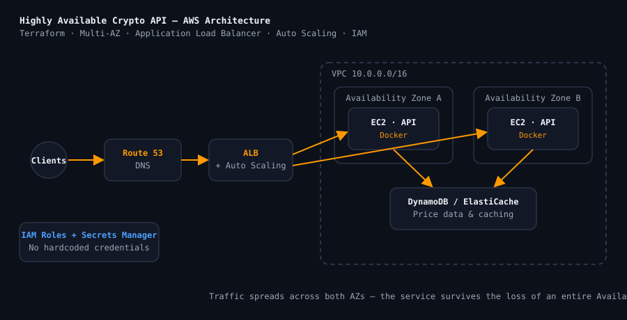

AWS Certified Solutions Architect – Associate
In PreparationAmazon Web Services
Currently studying for the exam, which covers designing scalable, highly available, and fault-tolerant systems on AWS.
Former bank branch manager (10+ years) turned developer. I build fintech software with Python, TypeScript and the cloud: a German tax-filing platform connected to ELSTER, and a live mobile-money ordering app for a supermarket in Ghana.
$ whoami developer --focus="fintech, correctness, automation" $ terraform apply Apply complete! Resources: 14 added, 0 changed. $ aws sts get-caller-identity arn:aws:iam::****:user/patrick $ ./deploy.sh --env prod ✓ build ✓ test ✓ push ✓ deploy $ _
I'm Patrick, a software developer and BSc Computer Science student at GISMA University of Applied Sciences in Berlin. Before that I spent over ten years at Agona Rural Bank in Ghana, from credit officer to branch manager; in 2021 my branch was the most profitable in the bank. Now I build the kind of software I used to rely on: payments, tax and financial tools where the numbers have to be right.
I work AI-assisted, with Claude Code as my pair programmer, and put the effort where a banker would: automated tests, money held in integer cents, CI-gated deploys, and documentation that explains why, not just how. On the infrastructure side I use AWS, Terraform and Docker, and I'm preparing for the AWS Solutions Architect exam.
Banking left me with strong instincts for credit risk, AML/CFT compliance, and process discipline — habits that translate directly into building financial software responsibly.
Let's talkAmazon Web Services
Currently studying for the exam, which covers designing scalable, highly available, and fault-tolerant systems on AWS.
HashiCorp
Currently studying toward validating Infrastructure as Code fundamentals and Terraform workflows.
Real products first, then the labs and coursework behind them.
A consumer tax-filing platform for people living in Germany: enter income and deductions, see an estimated refund, and file electronically with the Finanzamt through ELSTER. I obtained an official ELSTER manufacturer ID and integrated the tax authority's certified ERiC library. The tax engine covers wage, capital, rental and self-employment income, church tax, Soli and child allowances, with every legal constant traced to the statute and versioned per tax year. Deployed in the EU with CI-gated deploys; currently pre-launch.
What I learned: money belongs in integer cents, and "CI is green" is only true once you have checked a run.
Visit meinetaxengine.deAn online ordering system I built, pro bono, for a family-run supermarket in Agona, Ghana. Customers browse the catalogue, pick delivery or pickup slots, and pay with MTN MoMo, Telecel Cash, AT Money, card or cash on delivery via Paystack, with SMS order updates. Staff and the owner run orders, stock, CSV imports and revenue reports from their own dashboards. Automated daily off-site backups and an Android app build.
What I learned: building for a real owner means designing for their staff, their payment methods and their internet, not mine.
Visit benzicultimate.comBuilt a resilient cryptocurrency price API on AWS, provisioned with Terraform and fronted by an Application Load Balancer spreading traffic across multiple Availability Zones. Auto Scaling keeps the service healthy under load, while IAM roles and secrets management keep credentials out of the codebase.

What I learned: how to design for failure so the service survives the loss of an entire Availability Zone.
View on GitHubA machine-learning web app: an XGBoost model on 35 engineered features (Elo, form, odds, head-to-head) from 137 seasons across 6 European leagues, compared live against bookmaker odds to flag value bets. About 51% cross-validated accuracy on home/draw/away, against a 33% baseline.
What I learned: feature engineering matters more than the model, and markets are hard to beat.
View on GitHubDeployed a machine-learning inference API with reproducible infrastructure and a container-based workflow. The project demonstrates how a trained model is packaged, served behind a REST endpoint, and shipped through an automated pipeline.
What I learned: bridging the gap between data science artefacts and production-grade deployment.
View on GitHubPhase 1 is done: the AWS network written in Terraform, with a VPC, public and private subnets, and least-privilege security groups. Next up are the containerised app tier (Docker), the database tier, and a GitHub Actions deploy pipeline.
What I learned: how to model a network as code so it can be torn down and rebuilt identically.
View on GitHubA full-stack real-time group chat application showing my application-development skills beyond pure infrastructure — handling concurrent users, message state, and a clean client/server architecture.
What I learned: managing concurrency and real-time state across many connected clients.
View on GitHubA Unix command-line interpreter written from scratch in C. Implements command parsing, the PATH lookup, process creation with fork/exec, built-ins, and environment handling — a deep dive into how Linux actually runs programs.
What I learned: the mechanics of processes, system calls, and the shell that ties Linux together.
View on GitHubPulled automatically from my public repositories so this section never goes stale.
Small, focused demonstrations of the everyday skills cloud teams rely on — automation, scripting against AWS, and networking.
A server bootstrap and health-check script — package setup, log rotation, disk and service checks, with clear logging and exit codes.
Read the exerciseA boto3 script that audits an AWS account — listing EC2 instances and flagging S3 buckets without encryption or that are publicly accessible.
Read the exerciseA documented walkthrough of building a VPC: public/private subnets, route tables, an internet and NAT gateway, and least-privilege security groups.
Read the exerciseI'm actively looking for a working student role in software development, fintech or cloud in Germany. Whether it's about infrastructure, automation, or a potential collaboration — I'd love to hear from you.